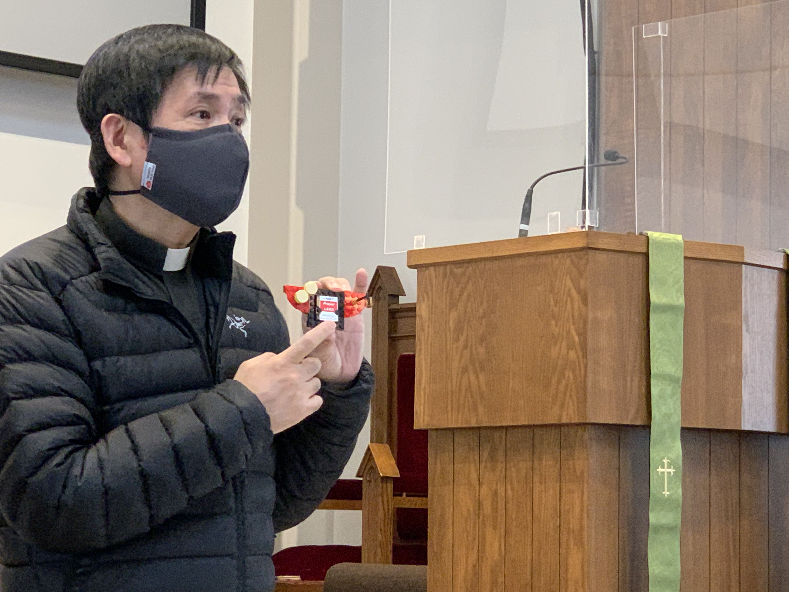
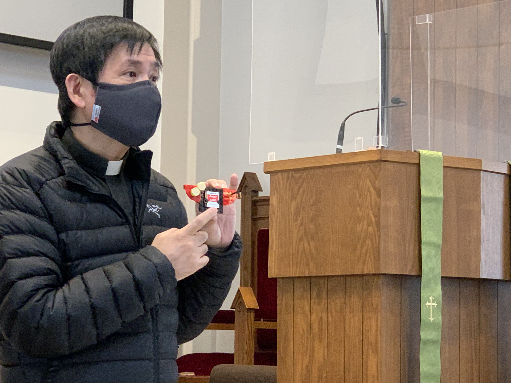

About David
David Tin is the pastor of Rhenish Church of Canada in Markham, Ontario and the Dean of the Toronto Conference. He is the presiding chairperson of the Chinese Ministry Conference – ELCIC, representative of ELCIC in F.I.L.L. (Canadian Council of Churches). His passion is fresh expression in outreaching & evangelism in our multi-cultural community. He is a firm believer of partnership across congregations, ethnicity, denominations, and generations. David restlessly teaches everyone how to build up the kingdom of God. He challenge us to live out our faith as Jesus taught us. He pushes himself and others to work hard and adapt to the changes caused by the pandemic. David is married to Mavis Fung and blessed with two boys: Martin (aka the coolest one) and Caleb.
 
